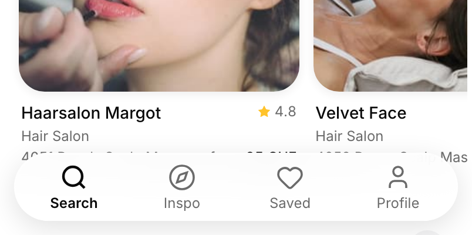
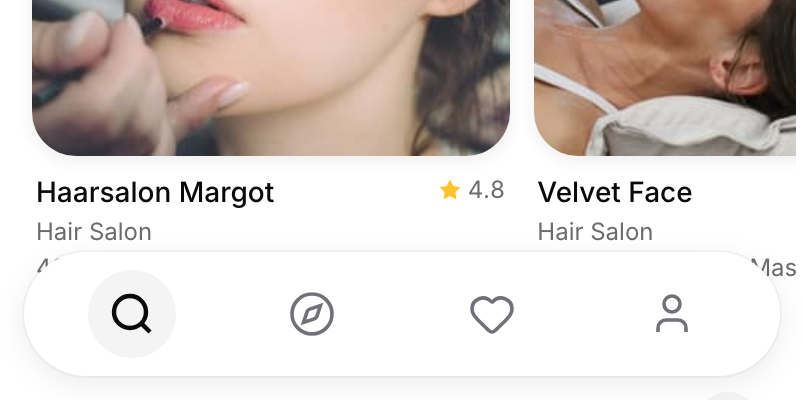
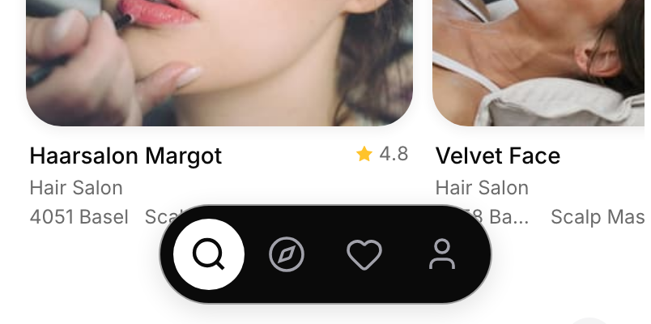
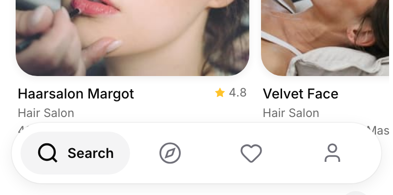

Bottom bar: 3 options
Same home page, only the bottom bar changes. B, C and D come from tab bars you saved on X. None uses blur. Tap a link to try it; tabs switch when tapped.
A. Today
See-through white with blur, icons and labels.

B. White pill, icons only
Solid white, soft shadow, the current tab on a grey circle. From the feed screen you saved four times (posts 616, 639, 676, 704).

C. Black dock
An ink dock that only takes the room its icons need, the current tab on a white circle. From the delivery app you saved (post 512).

D. White pill, current tab named
Solid white, the current tab is a grey capsule with its name, the others are icons. From the health apps you saved (posts 255, 203).

My pick: D
My judgment: it drops the blur you dislike and stays flat like the close button, while still naming where you are. B and C hide every label, and the Inspo compass is not obvious without one.